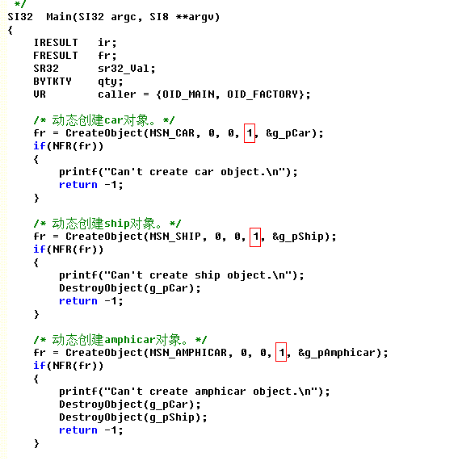

Historical primer (1.0.6): old API and VC6 steps are references only. Use the current tutorial and build guide. Current guide
《 OIOIC Primer 》the Second Edition By 赵平智 (a Chinese) pervise.zhao@gmail.com http://code.google.com/p/oioic |
OIOIC 1.0.6 |
| Home << |
With the "pCaller" parameter of object interface, OIOIC perfectly objectivizes multithreading access control of object. Besides these SEs of OS(Operating System), such as mutex, critical section, semaphore etc, used to control the synchronization of threads, you can also use the "pCaller->cr" to identify visiting AOs (threads), and then treat them differently according to requirement.
The maximum number of AOs that an objects can simultaneously receive, is the "NumCR" parameter of the "CreateObject" macro. In the foregoing samples, the car, the ship and the amphicar objects were limited to support one AO.

| Prev chapter : Arbitrary Complex Inheritance Chain | Next chapter : Summary |
Copyright©2005-2009 赵平智. All Rights Reserved.